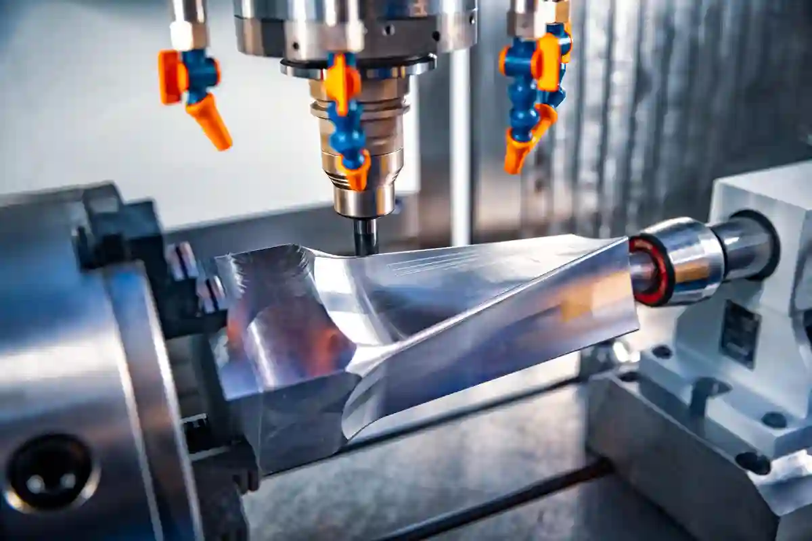
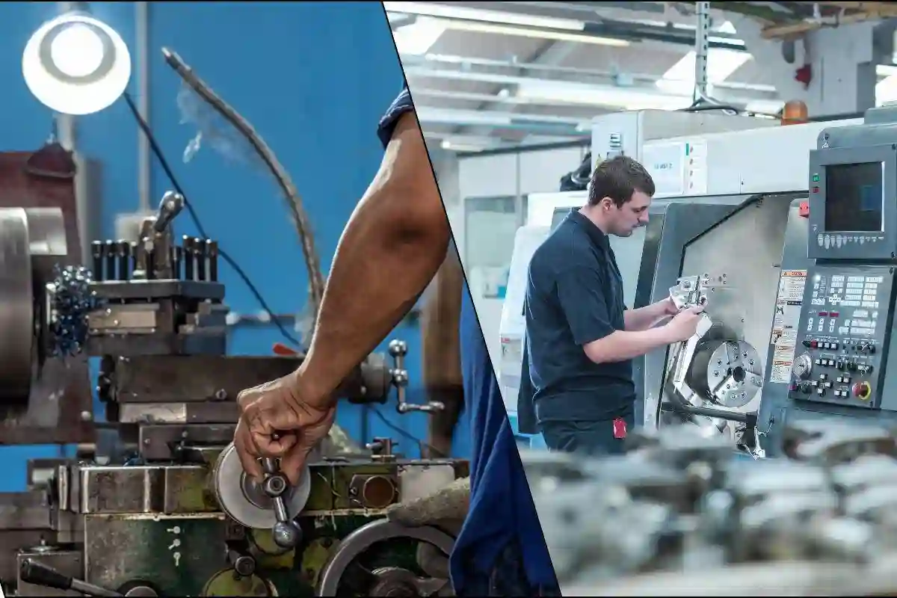

CNC Talaşlı İmalat Nedir? Manuel Üretimden Farkları
CNC talaşlı imalat, ham metal veya plastik malzemelerin bilgisayar kontrollü tezgâhlar yardımıyla yüksek hassasiyetle işlenmesini ifade eden modern bir üretim yöntemidir. Bu yöntemde malzeme, önceden tanımlanmış dijital kodlar (G-kodları) doğrultusunda kontrollü biçimde kesilir, delinir veya şekillendirilir. Geleneksel üretim tekniklerinden farklı olarak, operatör becerisinden ziyade sayısal kontrol sistemleri üretim kalitesini belirler.
Endüstriyel üretimde cnc talaşlı imalat, özellikle tolerans hassasiyetinin kritik olduğu otomotiv, savunma, medikal ve havacılık sektörlerinde standart üretim yaklaşımı hâline gelmiştir. Bunun temel nedeni, CNC sistemlerinin mikron seviyesinde doğruluk, yüksek tekrarlanabilirlik ve ölçeklenebilir üretim kabiliyeti sunmasıdır.
Bu noktada dikkat edilmesi gereken önemli unsur, CNC’nin yalnızca bir makine değil; aynı zamanda bir üretim felsefesi olduğudur. Üretim süreci; CAD/CAM tasarımı, takım yollarının belirlenmesi, simülasyon, talaş kaldırma ve kalite kontrol adımlarından oluşan bütünleşik bir yapıya sahiptir.
Talaşlı İmalat Kavramının Temel Yapısı

Talaşlı imalat, malzeme üzerinden istenmeyen kısımların kaldırılması esasına dayanan bir üretim yöntemidir. Bu süreçte kesici takımlar, iş parçası üzerinden kontrollü biçimde talaş kaldırarak istenen geometrinin elde edilmesini sağlar.
Bu üretim yaklaşımı hakkında kapsamlı bir çerçeveye ulaşmak için Talaşlı İmalat Blog sayfası, konuya giriş niteliğinde güçlü bir içerik merkezi (hub) olarak değerlendirilmelidir.
Talaş Kaldırma Mantığı Nasıl Çalışır?
Talaş kaldırma işlemi, kesici takım ile iş parçası arasındaki relatif hareket sayesinde gerçekleşir. Bu hareket, ilerleme, kesme hızı ve derinlik parametreleriyle kontrol edilir. CNC sistemlerinde bu parametreler dijital olarak tanımlandığı için sonuçlar operatör farkından bağımsızdır.
Bu bağlamda cnc ile talaşlı imalat, manuel yöntemlere göre çok daha stabil sonuçlar üretir. Özellikle karmaşık geometrilerde, insan elinin sınırlarını aşan bir doğruluk seviyesi sunar.
CNC ve Manuel Talaşlı İmalat Arasındaki Temel Farklar
Manuel ve cnc imalat farkı, üretim dünyasında en sık karşılaştırılan konulardan biridir. Manuel sistemlerde tezgâh hareketleri doğrudan operatör tarafından kontrol edilirken, CNC tezgâhlarda bu süreç tamamen yazılım tabanlıdır.
Kontrol Mekanizması ve İnsan Faktörü
Manuel imalatta üretim kalitesi büyük ölçüde ustanın deneyimine bağlıdır. Oysa cnc talaşlı imalat, insan faktörünü minimuma indirerek standart kalite üretir. Bu durum, özellikle seri üretim ve kalite sürekliliği açısından belirleyicidir.
Hassasiyet ve Tolerans Yönetimi
Manuel üretimde ±0,1 mm toleranslar kabul edilebilirken, CNC sistemlerde cnc işleme hassasiyeti sayesinde ±0,01 mm seviyeleri rutin hâle gelmiştir. Bu fark, montaj uyumu ve parça ömrü açısından kritik avantajlar sağlar.
Bu teknik farkların detaylı işlendiği CNC İşleme Yöntemleri Nelerdir? başlıklı içerik, konunun daha derinlemesine anlaşılmasına katkı sunar.
CNC Üretimde Dijitalleşmenin Getirdiği Avantajlar
CNC teknolojisi, üretim süreçlerini yalnızca hızlandırmakla kalmaz; aynı zamanda ölçülebilir, izlenebilir ve optimize edilebilir hâle getirir. Bu durum cnc üretim avantajları başlığı altında toplanabilecek birçok teknik kazanım doğurur.
Tekrarlanabilirlik ve Seri Üretim Gücü
CNC sistemlerin en güçlü yönlerinden biri cnc üretimde tekrarlanabilirlik kabiliyetidir. Aynı parça, farklı zamanlarda ve farklı operatörlerle dahi üretildiğinde birebir ölçüsel tutarlılık sağlar. Bu özellik, kalite kontrol maliyetlerini ciddi ölçüde düşürür.
Süreç Optimizasyonu ve Fire Azaltma
Dijital üretim sayesinde takım yolları simüle edilir, çarpışmalar önceden tespit edilir ve hatalı üretim riski minimize edilir. Bu durum, manuel üretime kıyasla çok daha düşük fire oranı anlamına gelir.
CNC Talaşlı İmalatın Endüstriyel Kullanım Alanları
CNC teknolojisi, çok geniş bir sektör yelpazesinde kullanılmaktadır. Özellikle CNC Tornalama ve CNC Frezeleme ve Dik İşleme süreçleri, silindirik ve prizmatik parçaların üretiminde temel yöntemlerdir. Bu süreçlerin teknik altyapısı, Makina Mühendisleri Odası tarafından yayımlanan teknik kaynaklarda da detaylı biçimde ele alınmaktadır.
CNC Tornalama ve CNC Frezeleme Arasındaki Temel Farklar

CNC talaşlı imalat süreçleri içerisinde en yaygın kullanılan iki yöntem tornalama ve frezeleme operasyonlarıdır. Bu iki yöntem çoğu zaman birbiriyle karıştırılsa da, hareket eksenleri, parça geometrisi ve talaş kaldırma mantığı açısından ciddi farklar barındırır.
Bu farkların doğru anlaşılması, cnc ile talaşlı imalat projelerinde doğru tezgâh seçimi yapılmasını sağlar ve üretim maliyetlerini doğrudan etkiler.
CNC Tornalama Nedir ve Hangi Parçalarda Kullanılır?
CNC tornalama, iş parçasının döndüğü; kesici takımın ise sabit veya kontrollü eksen hareketleriyle talaş kaldırdığı bir üretim yöntemidir. Özellikle silindirik, konik ve dairesel simetriye sahip parçalar için idealdir.
Bu yöntemin detaylı teknik altyapısı CNC Tornalama başlıklı içerikte kapsamlı biçimde ele alınmaktadır.
CNC tornalamanın öne çıktığı parça türleri:
- Miller
- Burçlar
- Pimler
- Dişli ön formları
Bu parçalarda cnc işleme hassasiyeti, yüzey kalitesi ve ölçü tutarlılığı açısından manuel yöntemlerle kıyaslanamayacak seviyededir.
CNC Frezeleme (Dik İşleme) Ne Sağlar?
CNC frezeleme ise kesici takımın döndüğü, iş parçasının ise sabit kaldığı veya çok eksenli hareket ettiği bir üretim yaklaşımıdır. Karmaşık yüzeyler, cepler, kanallar ve üç boyutlu geometriler bu yöntemle üretilir.
Bu süreç, özellikle CNC Frezeleme ve Dik İşleme uygulamalarında yüksek esneklik sunar. Frezeleme operasyonları, manuel ve cnc imalat farkı karşılaştırmalarında en net farkın görüldüğü alanlardan biridir. Manuel frezelerde operatör yeteneği belirleyiciyken, CNC frezelerde sonuçlar dijital veriyle standartlaşır.
Çok Eksenli CNC Sistemlerin Üretime Katkısı
Geleneksel 3 eksenli CNC tezgâhlar günümüzde hâlâ yaygın olarak kullanılsa da, artan geometrik karmaşıklık 4 ve 5 eksenli sistemleri zorunlu kılmıştır. Bu sistemler, tek bağlamada çok yüzeyli işleme imkânı sunar.
Bağlama Sayısının Azalması ve Hassasiyet
Her bağlama değişimi, ölçüsel hata riskini beraberinde getirir. Çok eksenli CNC sistemler sayesinde parça tek seferde işlenebilir ve bu durum cnc üretimde tekrarlanabilirlik açısından büyük avantaj sağlar. Aynı zamanda bağlama sürelerinin azalması, çevrim sürelerini kısaltarak cnc üretim avantajları arasında önemli bir maliyet kazanımı oluşturur.
Karmaşık Geometrilerde CNC Üstünlüğü
Manuel üretimde erişilemeyen alt yüzeyler, ters açılar ve serbest formlar; CNC teknolojisi sayesinde yüksek doğrulukla üretilebilir. Bu durum, özellikle kalıp, aparat ve özel makine parçalarında CNC’yi vazgeçilmez kılar. Bu yaklaşımın özel üretim tarafındaki karşılığı Özel Talaşlı İmalat çözümleri ile somutlaşır.
CNC Talaşlı İmalatta Kalite Kontrol ve Ölçüm Süreçleri
CNC üretim yalnızca talaş kaldırma sürecinden ibaret değildir. Üretimin her aşaması ölçüm ve doğrulama ile desteklenir. Bu yapı, cnc talaşlı imalat süreçlerinin güvenilirliğini belirleyen temel faktörlerden biridir.
Ölçüsel Doğrulama ve Süreç Kontrolü
Üretim sonrası CMM (Koordinat Ölçüm Makinesi), mastarlar ve dijital ölçüm ekipmanları ile parça doğrulanır. CNC sistemlerin sağladığı ölçü tutarlılığı sayesinde sapmalar minimum seviyede kalır.
Bu yaklaşım, ISO 9001 ve ISO 2768 gibi kalite standartlarıyla da uyumludur. Türkiye’de bu standartlara ilişkin teknik rehberlere TSE – Türk Standardları Enstitüsü – https://www.tse.org.tr adresinden ulaşılabilir.
Seri Üretimde Kalite Sürekliliği
Manuel üretimde kalite, operatör yorgunluğu veya dikkat dağınıklığı nedeniyle dalgalanabilir. CNC sistemlerde ise üretim parametreleri sabit olduğu için her parça aynı kalite seviyesinde üretilir. Bu durum, özellikle otomotiv ve savunma sanayii gibi sektörlerde kritik öneme sahiptir.
CNC ile Talaşlı İmalatın Maliyet Yapısı
İlk yatırım maliyeti yüksek gibi görünse de, cnc ile talaşlı imalat uzun vadede toplam üretim maliyetlerini düşürür. Bunun temel nedeni; düşük fire oranı, kısa çevrim süresi ve minimum yeniden işleme ihtiyacıdır.
Birim Parça Maliyetine Etkisi
Seri üretimde parça başı maliyet, manuel üretime kıyasla ciddi oranda azalır. Özellikle tekrarlı siparişlerde cnc üretimde tekrarlanabilirlik, maliyet optimizasyonunun temelini oluşturur.
CNC Talaşlı İmalatın Manuel Üretime Göre Stratejik Üstünlükleri
Endüstriyel üretim kararlarında yalnızca teknik yeterlilik değil, sürdürülebilirlik, ölçeklenebilirlik ve uzun vadeli maliyet kontrolü de belirleyici faktörlerdir. Bu noktada cnc talaşlı imalat, manuel üretime kıyasla yalnızca bir teknoloji değil, aynı zamanda stratejik bir üretim yaklaşımı sunar.
Manuel yöntemler kısa vadede düşük yatırım maliyeti gibi görünse de, süreç karmaşıklığı arttıkça CNC sistemlerin sunduğu avantajlar net biçimde ortaya çıkar.
Standartlaşma ve Süreç Yönetimi
Manuel üretimde süreç bilgisi çoğu zaman ustanın tecrübesine bağlıdır. Bu bilgi kişiseldir ve sürdürülebilir değildir. Oysa cnc ile talaşlı imalat, üretim bilgisini dijital ortama taşıyarak kurumsallaştırır.
- Aynı parça farklı vardiyalarda aynı kalitede üretilir
- Operatör değişimi kaliteyi etkilemez
- Üretim verileri geriye dönük analiz edilebilir
Bu yapı, cnc üretim avantajları arasında en kritik olanlardan biridir.
Ölçeklenebilirlik ve Kapasite Artışı
Manuel üretimde kapasite artışı, doğrudan insan kaynağına bağlıdır. CNC sistemlerde ise kapasite; vardiya sayısı, otomasyon seviyesi ve takım optimizasyonu ile artırılabilir. Bu durum özellikle büyüme hedefi olan firmalar için cnc talaşlı imalat yöntemini zorunlu kılar. Bu yaklaşımın uygulamadaki örnekleri, CNC İşleme Yöntemleri Nelerdir? başlıklı içerikte detaylı biçimde ele alınmaktadır.
Hangi Projelerde Manuel Talaşlı İmalat Hâlâ Tercih Edilir?
Her ne kadar CNC teknolojisi endüstride baskın hâle gelmiş olsa da, manuel üretimin tamamen ortadan kalktığını söylemek doğru değildir. Bazı özel durumlarda manuel yöntemler hâlâ rasyonel bir tercih olabilir.
Tekil ve Basit Geometrili Parçalar
Adet sayısı çok düşük olan, tolerans gereksinimi geniş ve geometrisi basit parçalar için manuel üretim hâlâ ekonomik olabilir. Bu tür işlerde CNC programlama süresi, üretim süresinin önüne geçebilir. Ancak bu durum, manuel ve cnc imalat farkı değerlendirilirken mutlaka proje bazlı analiz yapılmasını gerektirir.
Acil Müdahale ve Revizyon İşleri
Atölye ortamında hızlı müdahale gerektiren küçük revizyonlar veya tamiratlar, manuel tezgâhlarla daha pratik şekilde çözülebilir. Bu tür işler genellikle seri üretim kapsamı dışındadır. Bununla birlikte, bu avantaj manuel üretimin istisnai bir kullanım alanı olduğunu gösterir; ana üretim yöntemi olarak sürdürülebilir değildir.
CNC’ye Geçiş Sürecinde Yapılan Kritik Hatalar
Birçok işletme, cnc talaşlı imalat sistemlerine geçiş yaparken yalnızca makine yatırımıyla sürecin tamamlandığını düşünür. Oysa CNC’ye geçiş, bütüncül bir dönüşüm gerektirir.
Yanlış Tezgâh ve Kapasite Seçimi
İhtiyaç analizinin doğru yapılmaması, yetersiz eksen sayısına veya kapasiteye sahip tezgâhların tercih edilmesine yol açar. Bu durum hem üretim esnekliğini sınırlar hem de yatırımın geri dönüş süresini uzatır. Bu nedenle geçiş sürecinde, mevcut ve gelecekteki parça geometrilerinin doğru analiz edilmesi kritik önemdedir.
Programlama ve CAM Altyapısının İhmal Edilmesi
CNC sistemlerin verimli çalışması yalnızca donanımla değil, güçlü bir CAD/CAM altyapısıyla mümkündür. CAM yazılımı ve takım yolu optimizasyonu yapılmadığında, CNC tezgâh manuelden farksız hâle gelir. Bu noktada cnc işleme hassasiyeti, yazılım kalitesiyle doğrudan ilişkilidir.
CNC Talaşlı İmalatta Operatör ve Mühendislik Rolü
CNC üretimde insan faktörü tamamen ortadan kalkmaz; rol değiştirir. Operatör artık fiziksel kontrol yerine süreci izleyen, parametreleri yöneten ve kaliteyi denetleyen bir pozisyona geçer.
Operatör Yetkinliğinin Evrimi
Manuel üretimde ustalık ön plandayken, CNC üretimde teknik okuryazarlık, ölçüm bilgisi ve proses takibi ön plana çıkar. Bu dönüşüm, cnc üretimde tekrarlanabilirlik seviyesini doğrudan etkiler. Bu dönüşümle ilgili sektörel değerlendirmeler, TMMOB Makina Mühendisleri Odası üzerinden yayımlanan teknik makalelerde de ele alınmaktadır.
CNC Talaşlı İmalatta Özel Parça Üretim Stratejileri
Standart seri üretimin ötesine geçildiğinde, cnc talaşlı imalat sistemlerinin en güçlü olduğu alanlardan biri özel parça üretimidir. Özel parça; standart kataloglarda yer almayan, belirli bir makineye, projeye veya uygulamaya özgü olarak tasarlanan bileşenleri ifade eder.
Bu tür üretimlerde esneklik, hassasiyet ve mühendislik desteği kritik rol oynar. CNC teknolojisi, bu üç ihtiyacı aynı anda karşılayabilen nadir üretim yaklaşımlarından biridir.
Düşük Adetli ve Tekrarlı Özel Üretimler
Özel parça üretimi çoğu zaman düşük adetlerle başlar. Ancak parça başarılı olduğunda, ilerleyen süreçte aynı parçanın tekrar tekrar üretilmesi gerekebilir. Bu noktada cnc üretimde tekrarlanabilirlik, özel üretimi sürdürülebilir hâle getirir.
Manuel üretimde ilk parça ile onuncu parça arasında ölçüsel farklar oluşabilirken, CNC sistemlerde aynı CAD/CAM verisiyle üretilen her parça ölçüsel olarak aynıdır. Bu yaklaşımın uygulamadaki karşılığı Özel Talaşlı İmalat çözümleri ile doğrudan ilişkilidir.
Tasarımdan Üretime Entegrasyon
Özel parça projelerinde tasarım aşaması, üretim sürecinin ayrılmaz bir parçasıdır. CNC altyapısında tasarım (CAD) ile üretim (CAM) aynı veri seti üzerinden ilerlediği için revizyonlar hızlı ve kontrollü biçimde uygulanabilir.
Bu entegrasyon sayesinde:
- Tasarım hataları üretim öncesinde tespit edilir
- Prototip maliyetleri düşer
- Süreç şeffaflaşır
Bu özellikler, cnc ile talaşlı imalat yöntemini Ar-Ge projeleri için ideal hâle getirir.
Prototip ve Ar-Ge Süreçlerinde CNC’nin Rolü
Ar-Ge süreçlerinde temel hedef, fikirlerin hızlı şekilde fiziksel ürüne dönüştürülmesidir. CNC teknolojisi, bu dönüşümü yüksek doğrulukla gerçekleştirebildiği için prototipleme süreçlerinde yaygın olarak tercih edilir.
Fonksiyonel Prototip Üretimi
3D baskı gibi yöntemler görsel prototipler için uygun olsa da, fonksiyonel test gerektiren parçalar için CNC vazgeçilmezdir. Özellikle mekanik dayanım, montaj uyumu ve yüzey kalitesi testlerinde cnc işleme hassasiyeti belirleyici olur.
Bu aşamada üretilen prototipler, seri üretime geçişte referans parça olarak kullanılır.
Revizyon ve Iteratif Geliştirme
CNC sistemlerde program üzerinde yapılan küçük değişiklikler, parçaya doğrudan yansıtılabilir. Bu durum, Ar-Ge sürecinde iteratif geliştirmeyi hızlandırır. Manuel üretimde her revizyon, baştan ustalık gerektirirken; CNC’de bu süreç veriye dayalıdır.
Bu fark, manuel ve cnc imalat farkı karşılaştırmalarında Ar-Ge tarafında CNC’yi açık ara öne çıkarır.
CNC Talaşlı İmalatta Gerçek Üretim Süreci Nasıl İlerler?
Bir CNC üretim projesi, yalnızca makine başında başlayan bir süreç değildir. Aksine, mühendislik ve planlama aşamalarıyla birlikte bütüncül bir iş akışı izlenir.
Proses Akışının Temel Adımları
- Teknik resim ve tolerans analizi
- CAD modelleme ve kontrol
- CAM programlama ve simülasyon
- Tezgâh kurulumu ve takım seçimi
- Talaş kaldırma operasyonu
- Ölçüm ve kalite kontrol
Bu yapı, cnc talaşlı imalat süreçlerinin neden manuel yöntemlere kıyasla daha öngörülebilir olduğunu açıkça gösterir.
Süreç İzlenebilirliği ve Dokümantasyon
CNC üretimde her adım kayıt altındadır. Kullanılan programlar, kesme parametreleri ve ölçüm sonuçları geriye dönük olarak izlenebilir. Bu durum, kalite güvence sistemleri açısından büyük avantaj sağlar.
Bu yaklaşım, ISO tabanlı kalite sistemlerinin temel gereklilikleriyle uyumludur. Türkiye’de bu sistemlere ilişkin güncel dokümanlara KOSGEB T.C. Küçük ve Orta Ölçekli İşletmeleri Geliştirme ve Destekleme İdaresi Başkanlığı üzerinden ulaşılabilmektedir.
CNC Talaşlı İmalatın Uzun Vadeli İşletme Etkileri
CNC yatırımı yalnızca üretim değil, işletme kültürü üzerinde de dönüşüm yaratır. Planlama, kalite ve mühendislik disiplinleri üretimle bütünleşir.
Bu bütünleşme sayesinde:
- Üretim tahmin edilebilir hâle gelir
- Kalite maliyetleri düşer
- Müşteri memnuniyeti artar
Bu sonuçlar, cnc üretim avantajları listesinin yalnızca teknik değil, stratejik boyutunu da ortaya koyar.
CNC Talaşlı İmalatın Endüstrideki Geleceği
Endüstriyel üretim, son yıllarda dijitalleşme, otomasyon ve veri odaklı karar alma ekseninde hızlı bir dönüşüm yaşamaktadır. Bu dönüşümün merkezinde ise cnc talaşlı imalat yer almaktadır. Artık CNC yalnızca bir üretim yöntemi değil, akıllı üretim ekosisteminin temel bileşenlerinden biri olarak konumlanmaktadır.
Özellikle Endüstri 4.0 kavramıyla birlikte CNC sistemler; sensörler, üretim takip yazılımları ve kalite veri analiz araçlarıyla entegre hâle gelmektedir. Bu entegrasyon, üretimin yalnızca yapılmasını değil, ölçülmesini, analiz edilmesini ve sürekli iyileştirilmesini mümkün kılar.
Otomasyon ve Dijital İzlenebilirlik
Gelecekte CNC tezgâhlar, insan müdahalesi olmaksızın kendi süreçlerini optimize edebilen sistemlere dönüşmektedir. Takım aşınma verileri, kesme kuvvetleri ve yüzey kalitesi ölçümleri anlık olarak analiz edilmekte ve üretim parametreleri otomatik olarak ayarlanmaktadır.
Bu yapı sayesinde:
- Üretim duruşları azalır
- Kalite dalgalanmaları ortadan kalkar
- cnc üretimde tekrarlanabilirlik maksimum seviyeye çıkar
Bu gelişmeler, cnc üretim avantajları kavramını yalnızca bugünün değil, geleceğin de temel rekabet unsuru hâline getirir.
Nitelikli İş Gücü ve CNC Teknolojisi
CNC sistemlerin yaygınlaşması, nitelikli iş gücüne olan ihtiyacı azaltmaz; aksine dönüştürür. Gelecekte CNC operatörleri, yalnızca makine kullanan değil; süreci yöneten, veriyi yorumlayan ve kaliteyi denetleyen teknik uzmanlar olacaktır.
Bu dönüşüm, manuel ve cnc imalat farkı değerlendirmelerinde insan kaynağı perspektifinden de CNC lehine güçlü bir argüman sunar.
CNC Talaşlı İmalat mı, Manuel Üretim mi? Karar Rehberi
Üretim yöntemi seçimi, her işletme ve proje için farklı dinamiklere dayanır. Bu nedenle “hangisi daha iyi?” sorusu yerine “hangi koşulda hangisi doğru?” sorusu sorulmalıdır.
CNC Talaşlı İmalatın Doğru Tercih Olduğu Durumlar
Aşağıdaki durumlarda cnc talaşlı imalat net biçimde öne çıkar:
- Seri veya tekrarlı üretim ihtiyacı varsa
- Dar tolerans ve yüksek hassasiyet gerekiyorsa
- Ölçüsel tutarlılık kritik öneme sahipse
- Uzun vadeli maliyet optimizasyonu hedefleniyorsa
Bu koşullar altında manuel üretim, sürdürülebilir bir çözüm sunmaz.
Manuel Üretimin Sınırlı Avantaj Alanları
Manuel üretim, yalnızca:
- Tekil ve çok basit parçalar
- Acil, geçici veya tamirat amaçlı işler
için rasyonel bir alternatif olabilir. Bunun dışındaki tüm senaryolarda, manuel yöntemler uzun vadede kalite ve maliyet riskleri oluşturur.
Bu değerlendirme, cnc ile talaşlı imalat yaklaşımının neden modern üretimin omurgası hâline geldiğini açıkça ortaya koyar.
CNC Talaşlı İmalatta Doğru İş Ortağının Önemi
CNC teknolojisinin sunduğu tüm avantajlar, doğru altyapı ve mühendislik yaklaşımıyla anlam kazanır. Tezgâh parkuru, yazılım altyapısı, kalite kontrol süreçleri ve üretim deneyimi; son ürünün başarısını doğrudan etkiler.
Bu noktada yalnızca parça üreten değil, üretim sürecine mühendislik katkısı sunan firmalarla çalışmak kritik önem taşır. Bu yaklaşımın pratiğe döküldüğü çözümler, Özel Talaşlı İmalat kapsamında değerlendirildiğinde, CNC’nin gerçek potansiyeli ortaya çıkar.
Sonuç – CNC Talaşlı İmalat Neden Endüstriyel Bir Zorunluluktur?
Özetlemek gerekirse, cnc talaşlı imalat; hassasiyet, tekrarlanabilirlik, süreç kontrolü ve ölçeklenebilirlik gibi modern üretimin temel gereksinimlerini aynı potada birleştiren bir yöntemdir. Manuel üretim, belirli niş alanlarda varlığını sürdürebilse de, ana üretim yöntemi olarak rekabetçi değildir.
Bugünün ve yarının endüstriyel üretim dünyasında:
- Standart kalite
- Dijital kontrol
- Ölçülebilir süreçler
ancak CNC altyapısıyla mümkün hâle gelmektedir.
Bu nedenle CNC, bir tercih değil; stratejik bir üretim zorunluluğudur.